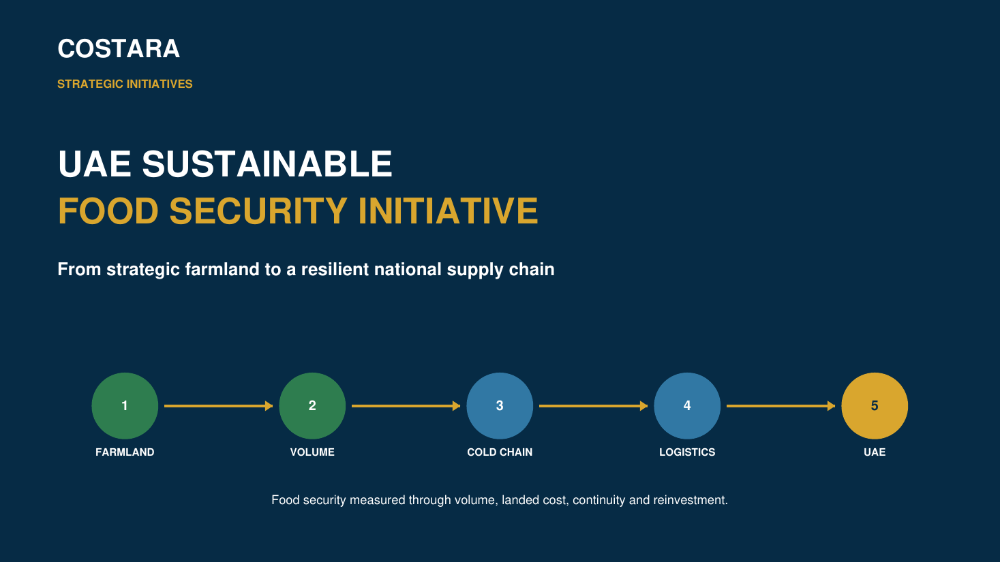

STRATEGIC INITIATIVE • FOOD SECURITY
UAE Sustainable Food Security Initiative
From Strategic Farmland to a Resilient National Supply Chain
A cost-controller-led concept connecting strategically controlled farming capacity with production volume, cold chain, international logistics, UAE landed cost, supply resilience and reinvestment.
VolumeAED / kgLoss %AED / tonneLanded CostBudget vs Actual